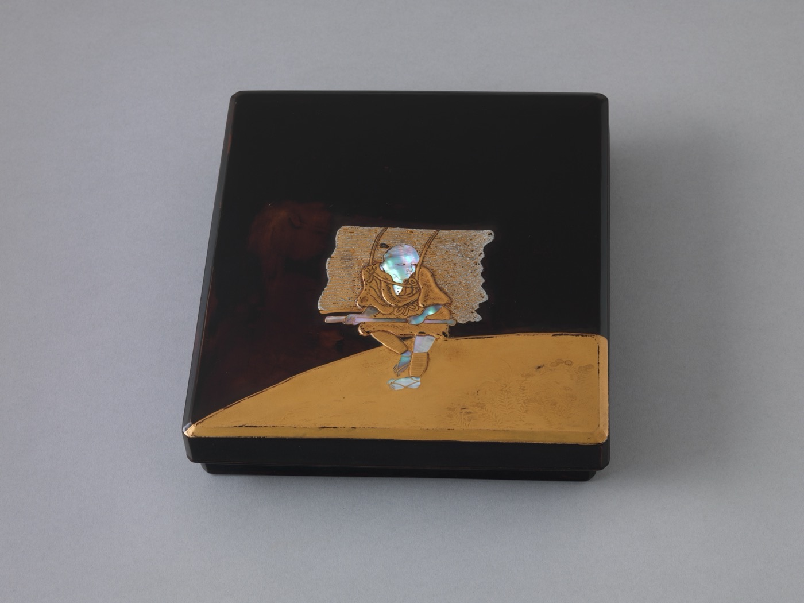
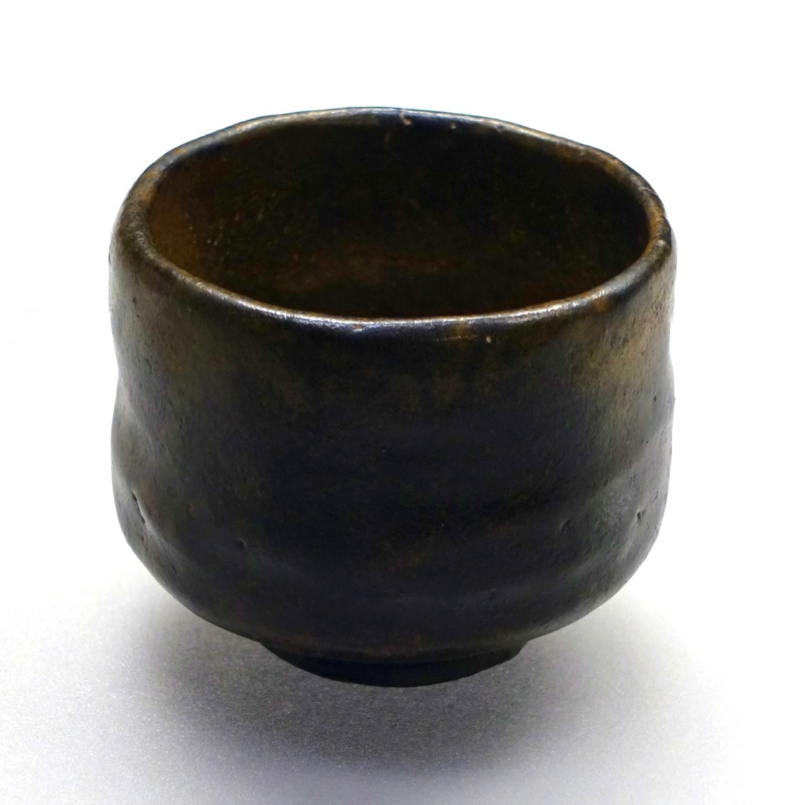

Tanizaki watches gold emerge in candlelight. Okakura considers the work of preparing and sharing tea.
2 essays·10 min read
scroll
Two essays
Lacquer by candlelight
Tanizaki thought electric light could make a fine lacquer box look vulgar. He imagined its makers working for dark rooms, where a candle picked out only parts of the gold. Illuminate the whole surface and the decoration becomes too much.
Junichiro Tanizaki published In Praise of Shadows in December 1933 and January 1934. The essay moves from houses to theaters, with stops at food and the toilet. An ugly appliance leads him to a larger complaint: Japan has adopted technologies designed around somebody else's habits.
Kakuzo Okakura's The Book of Tea, written in English and published in 1906, approaches beauty through a gathering. The host prepares a room; guests help give the occasion its meaning. Okakura uses tea to challenge readers who respect Japan's military victories more readily than its culture.
In Tohaku's screen, unpainted paper suggests mist between the trees. Some trunks fade into it; others stand close. Much of the scene depends on what he has left bare.
Tanizaki
What the light reveals, and removes
Tanizaki's lacquer passage begins with a restaurant that has switched from candles to electric lamps after customers complained. He asks for a candlestand. In that light, he can enjoy the bowls again. The decoration appears in portions, as the flame picks up one patch of gold and leaves another hidden.
Darkness is an indispensable element of the beauty of lacquerware.Tanizaki, In Praise of Shadows, trans. Harper and Seidensticker, p. 13

Writing Box with Woodcutter, 19th century, The Met, 58.169a, b. Black and gold lacquer with mother-of-pearl inlay. Museum photograph, public domain, resized.
He makes a similar case for tarnish. A darkened metal surface records years of use; polishing it removes something he values. He even admits that the celebrated sheen of age includes accumulated dirt. The traditional toilet he praises must be absolutely clean, as well as quiet and dim.
The toilet is a small wooden room near a garden, apart from the main building. Tanizaki describes hearing rain and seeing leaves from it. Then he admits the difficulties: the walk is inconvenient at night, the room is cold, and wood is hard to keep clean in an ordinary household. His own house has a flush toilet.
Tanizaki knows what makes this room possible. In a temple, there is room to set it apart and few people using it; everyone helps with the cleaning. In a crowded household, keeping wood clean is harder. He wants modern fixtures designed with more consideration for the rooms they occupy.
His larger claim is that imported equipment can reshape the art it serves. A writing tool influences handwriting; a bright stage changes the appearance of costumes. He goes as far as wondering whether Japanese science, developed independently, would have produced different physical principles. He admits he knows nothing about science. Harper and Seidensticker edition, pp. 1-16 and 23-27
Okakura
The work behind a simple gathering
Okakura calls his ideal Teaism. Tea becomes a way to bring aesthetic judgment into daily conduct, including the preparation of a room and the treatment of a guest. He connects it to Daoism, whose account of emptiness he draws on, and Zen Buddhism, which he presents as giving spiritual weight to ordinary work.
It is essentially a worship of the Imperfect, as it is a tender attempt to accomplish something possible in this impossible thing we know as life.Okakura, The Book of Tea, chapter I
Okakura's tea room suggests modest means, but he says its materials and skilled carpentry can make it more expensive than an ordinary mansion. The old utensils are clean. A white linen napkin and bamboo dipper are conspicuously new.

Suehiro, black Raku tea bowl, studio of Chojiro, 16th to 17th century, Tokyo National Museum. Museum record. Photograph by Daderot, 2018, CC0, resized.
Raku bowls are shaped by hand; this one has an uneven rim above a rounded body. Their development is associated with Chojiro and the tea master Sen no Rikyu in the late 16th century. Smithsonian's account of early Raku
Okakura gives the guest a job too. He criticizes collectors who admire a famous name or an old date without responding to the work. Understanding art takes effort, including a willingness to let an unfamiliar artist change your taste. Yet his standard remains personal: a great collection can consist of objects few other people know how to appreciate.
He wants tea to make refinement available beyond wealth and rank. His examples include expensive carpentry and rare objects, admired by guests with cultivated tastes. Chapter IV; chapter V
The reader
Five scenes from the books
Tanizaki records the compromises of his own house. Okakura tells stories about tea masters. His Rikyu anecdotes come centuries after the master's life; their dialogue is read here as part of Okakura's argument.
choose a scene, or use the arrow keys
Scene one
A compromise that spoils the paper
Building his house, Tanizaki wants paper sliding doors, or shoji, but worries about light and security. He puts glass outside and paper inside. The extra frame costs more; the glass spoils the softness he wanted from the paper. He wishes he had accepted glass from the start.
Elsewhere, he admits that an ordinary exposed bulb can look more natural than an elaborate disguise for it. His successful experiment is an electric brazier fitted into a traditional sunken hearth.
Tanizaki, Harper and Seidensticker edition, pp. 1-3. Paraphrase.
Scene two
The interval before a sip
A lacquer soup bowl holds mild warmth against the palms. Lifting its lid reveals liquid that nearly merges with the bowl's dark interior. Tanizaki describes the pause before drinking, when warmth and rising vapor convey what the eye cannot quite distinguish.
His comparison with ceramic includes touch and sound: ceramic feels colder and clatters. The pause before a sip lets him attend to the food while it is still mostly hidden.
Tanizaki, Harper and Seidensticker edition, pp. 14-15. Paraphrase.
Scene three
What gets left outside
In Okakura's description, a samurai leaves his sword beneath the eaves. Every guest bends to pass through the small entrance. Inside, the objects avoid duplication: living flowers shouldn't share the room with a flower painting, and a round kettle calls for an angular water pitcher.
The host chooses what receives attention and leaves the guest to complete the arrangement in imagination. Guests have already agreed on their order of precedence outside, before each of them stoops to enter.
Rikyu's son Shoan has washed the steps and watered the garden. No leaf or twig remains on the path. Rikyu tells him the work still isn't right, then shakes a tree to scatter autumn leaves across it.
The leaves fall onto steps that have already been washed three times. Okakura has just insisted that a tea master know how to clean. The garden's apparent ease comes at the end of an hour of work.
Hideyoshi hears of Rikyu's morning-glory garden and comes to see it. In Okakura's story, the garden has been cleared. One flower waits in the tea room, in a bronze vessel. Hideyoshi's anger gives way to admiration.
Earlier in the chapter, Okakura attacks the waste of cutting flowers for display. Here he defends their sacrifice to beauty. The cleared garden gives his example a cost that the single bloom in its vase can hide.
Both writers think the setting helps make the beauty. Tanizaki keeps asking what a material needs. Okakura asks how a host and guest can make an occasion worth their attention.
Tanizaki
Okakura
Light changes the appearance of a material.
Arrangement directs the guest's attention.
Age gives objects a surface he wants to keep.
Age alone cannot make an artwork worth admiring.
New equipment may suit an old room badly.
Copying an old style can suppress living judgment.
He hopes literature can preserve a disappearing atmosphere.
He wants artistic practice to shape present conduct.
Tanizaki praises gold and richly woven theatrical costumes along with dark wood. Okakura values fresh white implements in an aged room and warns against slavish copying of the past.
The limits
Whose taste, and whose past?
Both essays exaggerate national differences. Okakura rebukes Western readers for calling Japan civilized once it can kill on Manchurian battlefields. He also admits that Asian writers have invented absurd stories about Westerners, and names Shakespeare among those who understand suggestion. His attack is an attempt to change an unequal conversation, though his account of an exhausted China preserving little of its earlier culture is itself a sweeping dismissal. Chapters I and II
Tanizaki speculates that skin color helps explain whole peoples' tastes. He imagines white people finding people of color visually disruptive at a gathering and uses that imagined reaction to explain racial exclusion. He then uses this racial theory to explain a Japanese preference for muted colors and shadows. Pp. 31-33
His account of women also treats concealment as a means of producing beauty. He compares a woman whose body is hidden by clothes and darkness to lacquerware, leaving her face as the visible object of admiration. The celebrated sentence about beauty arising between light and shadow occurs within this discussion. Pp. 28-30
The endings
What these books leave unresolved
Tanizaki ends by asking for a place in literature where the lost shadows might survive. Japan will continue to modernize; he hopes art can keep an atmosphere that its buildings are losing. His final proposal is a room made of words. P. 42
Okakura closes with Rikyu's final gathering before his forced suicide. In his retelling, Hideyoshi suspects the tea master of plotting to poison him. Rikyu serves his guests, gives away the utensils, and keeps the bowl. He breaks it so that no one can drink from it again. Okakura describes a beautifully composed death at the command of a ruler. The host's judgment has shaped every object in the room, but cannot secure his life. Chapter VII
Editions and evidence
Sources and reading notes
The explanations are paraphrases and interpretations. The two displayed quotations preserve the editions' wording and punctuation. Tanizaki is read in Harper and Seidensticker's 1977 translation. Okakura wrote in English; his religious history and tea anecdotes are read as his account, with independent museum sources used for the objects.
Texts, objects, and context
Tanizaki.In Praise of Shadows, Leete's Island Books, 1977, trans. Thomas J. Harper and Edward G. Seidensticker. Scanned edition; publisher's current edition. Page links use the scan; page numbers in the prose refer to the printed book. Harper's afterword dates original publication to December 1933 and January 1934.
Translation and quotation. The lacquer quotation is on p. 13. The frequently circulated sentence beginning “Were it not for shadows” is present on p. 30 of this edition; its wording is verified against the scan. Gregory Starr's translation was published by Sora Books in 2017. It is a separate English text.
Okakura.The Book of Tea, 1906. Public-domain text; 1906 edition with scans. Chapter I defines Teaism; III supplies his Daoist and Zen account; IV describes the room and swept path; V discusses appreciation; VI includes the morning glory; VII closes with Rikyu.
The images. The three works illustrate this post; neither essay discusses these particular objects. Captions link the records and image credits. The Met dates its box to the 19th century while retaining an attribution to Ogata Korin (1658 to 1716); the record leaves that inconsistency unresolved. The bowl photograph is Daderot's CC0 image.